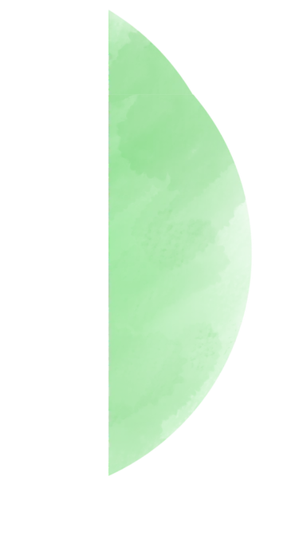
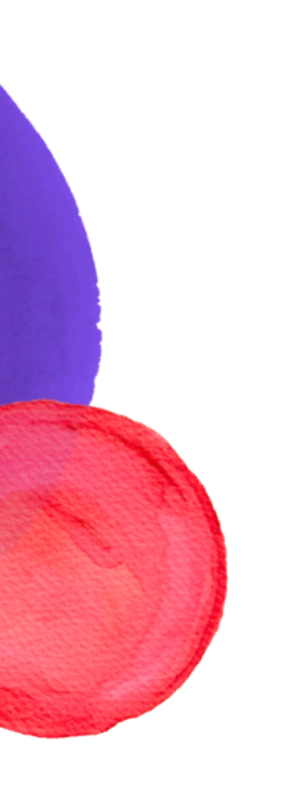

Einzelsitzungen · Workshops · Retreats
Die eigene Kreativität entfalten, den künstlerischen Ausdruck entdecken und sich persönlich entwickeln
Hallo,
Ich bin Ariane Mariane, Künstlerin und Gestalt-Praktikerin – oder, um es einfacher und origineller zu sagen: GestaltKünstlerin. Ich gestalte und begleite Räume, in denen Kunst & Gestalt sich begegnen, um Sie bei der Entfaltung Ihrer Kreativität, der Entdeckung Ihres künstlerischen Ausdrucks und Ihrer persönlichen Entwicklung zu unterstützen.
Die Kunst erlaubt uns, das Unsichtbare sichtbar zu machen. Der gestalttherapeutische Ansatz lädt uns ein, uns dessen bewusst zu werden, was zum Vorschein kommen möchte. Die Begegnung von Kunst & Gestalt öffnet einen Raum der Erkundung und des Hineinhörens in sich selbst.
Stellen wir uns vor,
Kunst zu machen könnte ein Kinderspiel sein – ohne Druck und ohne Vorurteile. Diese Vision hat mich dazu gebracht, zwei Räume rund um Kunst & Gestalt zu schaffen: ARTventureLand für immersive Erfahrungen vor Ort und ARTventureLab, um sie online von zu Hause aus zu erleben.
Der Akt des Gestaltens kann einen Raum für Selbstbetrachtung öffnen. Die Gestalttherapie ermöglicht es, das, was sich zeigt, aufzunehmen und zu unterstützen. Diese Begegnung von Kunst & Gestalt kann so auch eine Ressource sein, wenn Sie eine Zeit des Wandels, des Fragens oder eine schwierige Situation durchleben.
„Indem wir dem, was gespürt, aber noch nicht bewusst ist, Form geben, entdecken wir, wer wir sind und wer wir werden.“Carl Rogers


Und wenn alles möglich wäre?
Es braucht weder besonderes Können noch künstlerisches Talent, um sich mit der eigenen, einzigartigen Kreativität zu verbinden. Wenn Sie das anspricht, bin ich an Ihrer Seite, um von dort aus weiterzugehen, wo Sie heute stehen.
Ich begleite Sie von zu Hause aus, in einem vertraulichen und sicheren Rahmen, durch Momente der Verwandlung und des Wandels – in Ihrem Tempo und nach Ihren Bedürfnissen.
Mehr erfahrenProfitieren Sie von der Fülle und Dynamik einer Gruppe und erkunden Sie Kunst & Gestalttherapie online durch:
Dem Alltag entkommen, um der Kreativität Raum zu geben:
Um Ihre Begleitung individuell zu gestalten, biete ich Ihnen einen kostenlosen und unverbindlichen ersten Telefontermin von 20 Minuten an.
In diesem ersten Gespräch lernen wir uns kennen, sprechen über Ihre Bedürfnisse und spüren gemeinsam, ob wir miteinander arbeiten möchten.
Kontaktieren Sie mich, um das Kennenlerngespräch zu buchen.
KontaktKunst, besonders wenn sie intuitiv und experimentell ist, ist eine kraftvolle Ressource, um dem, was innerlich erlebt wird, Form zu geben. Experimentieren Sie mit Materialien, Farben und kreativen Prozessen, damit Ihr künstlerischer Ausdruck entstehen kann. Indem Sie Ihre Kreativität erkunden, kann Ihre innere Welt Gestalt annehmen, manchmal sogar bevor Sie sich dessen bewusst sind.
Die Gestalttherapie lädt Sie ein, langsamer zu werden und Ihre Aufmerksamkeit auf das zu richten, was hier und jetzt geschieht. Durch Präsenz und Dialog können Sie wahrnehmen, was in Ihnen vorgeht, und Ihre Gefühle, Bedürfnisse und Entscheidungen klären. So öffnen sich oft neue Möglichkeiten, und selbst das Unmögliche kann möglich werden.
Die Verbindung von Kunst und Gestalttherapie öffnet einen Raum, in dem die künstlerische Erfahrung zu einer Möglichkeit wird, mit sich selbst, mit anderen und mit der Welt um uns herum in Kontakt zu treten.
Zwischen Gestalten, Empfinden, Präsenz und Dialog kann sich etwas verschieben: eine Wahrnehmung, ein Gefühl, eine Art, in Beziehung zu sein, eine Entscheidung oder eine neue Sicht auf eine Situation. Kunst wird dann weniger zu einem Ergebnis als zu einer Erfahrung, die man lebt – ein Weg, um zu erkunden, zu durchqueren und zu verwandeln.

Ausgebildet am Bonner Institut für Analytische Gestalttherapie und am Institut Français de Formation Psychocorporelle (IFFP), gründet sich meine Praxis auf den Prinzipien der Gestalttherapie, mit tiefem Respekt vor jedem Menschen und seiner Einzigartigkeit.
Ich verpflichte mich, sichere, wohlwollende, vertrauliche und respektvolle Räume zu schaffen, in denen Erkundung, Kreativität und persönliche Entwicklung sich frei entfalten können.
Meine Praxis bewegt sich innerhalb der Grenzen meiner Kompetenzen und meines Berufsfeldes.
Ich respektiere die ethischen Grundsätze des Berufs und nehme regelmäßig Supervision in Anspruch, um eine verantwortungsvolle und qualitativ hochwertige Begleitung zu gewährleisten.

